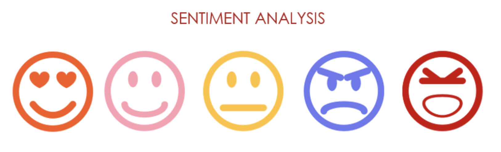
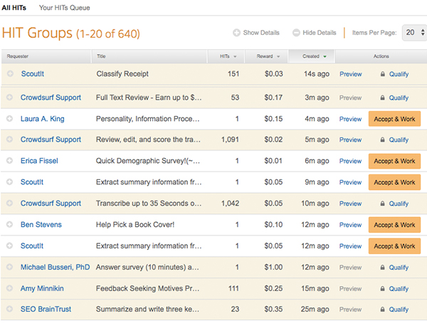

Sentiment .99 -
Are you a good AI Worker?
Made by William Zhang
> Explore
Sentiment analysis is the process of studying people’s opinions and emotions, generally using language clues. ML5.js's sentiment model is a pre-trained model trained on IMDB reviews to detect whether the sentiment of text is positive or negative.
The sentiment analysis result is a score between 0 and 1, with 0 being negative and 1 being positive. For example:
Score 0.999: Today is the happiest day and is full of rainbows!
Score 0.001: This show is actually so bad and depressing to watch.
source: becominghuman.ai
Sentiment analysis, due to its (alleged) simple nature and efficiency, has been widely used, for example, in recommender systems on reviews and feedbacks. More generally, sentiment analysis is used to categorize and filter texts.
However, are sentiment analysis accurate?
There are, indeed, some pitfalls on the general sentiment analysis problem, where the sentiment analyzer may fail to give accurate results.
The problem Irony and sarcasm is easy to understand, as sometimes even human cannot identify the sarcasm. For nagation, negation can be implicitly expressed without prefixes such as "non-", "dis-", and without "not". As for ambiguity, one word could have different meanings in different context. Take "unpredictable" as an example, a person being unpredictable and a story being unpredictable is totally different in sentiment. Moreover, in real-life texts, a sentence tends to be various in length, and it’s common that within a piece of text, some subjects will be criticized and some praised, generating multipolarity and making it hard for sentiment models to analyze the true sentiment behind the text.
Of course these problems are critical to determine the success of a sentiment model, but a more important question is:
Can text sentiment wholly represent the characteristics of a sentence?
The answer is probably NO, right? It is just like classifying people's credit base on their wealth, which is definitely partial and biased. Bias on people-related task are more addressed, whilst bias in text classifying is far less touched. And who knows what services we are using today are actually classifying text using only sentiment.
This project uses the dataset ETHICS introduced by Hendrycks et al. in Aligning AI With Shared Human Values. And through looking at those texts in the dataset that were given 0.99 sentiment scores, almost a perfect score regarding sentiment, it is concluded that SENTIMENT DOES NOT MEAN EVERYTHING. Or, sentiment means nothing.
> Next
With AI being seemingly omnipotent and autonomous, it needed large amount of human curated input to actually understand the task and give meaningful results. Among these human labor, the most important is data annotation.
Data annotation is the process of labeling the data available in various formats like text, video or images. For supervised machine learning, labeled data sets are required, so that machine can easily and clearly understand the input patterns.
While we would expect the dataset to be annotated by 'researchers', in most cases it is actually not: they are being annotated by third-world workers and unemployeed people via sites such as CrowdFlower, Clickworker, Toluna, and Amazon’s Mechanical Turk. They complete mind-numbing tasks for hours on end, sometimes earning just pennies per job. A recent Mechanical Turk listing, for example, offered workers 80 cents to read a restaurant review and then answer a survey about their impressions of it; the time limit was 45 minutes.
The MTurk dashboard (The Hustle)
Working as a data labeler/annotator, you are forced to work fast for just these poorly-paid wages. And all that comes out of your labelling interface, go into the AI training and propagates as AI algorithms in the use.
Now, you have the chance to experience the job of an AI worker.
Answer in voice: "yes" or "no", corresponding to whether each sentence that pops up on the screen is ethical or not.
Remember, DO NOT miss any questions.
> GO!